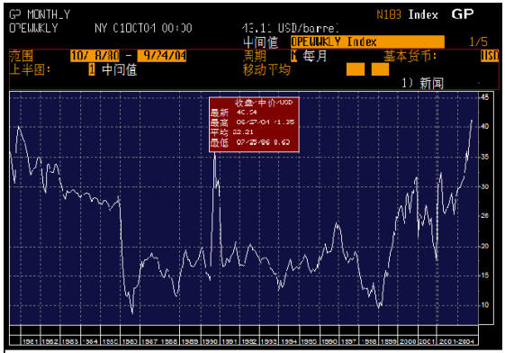

那一夜，他的体液喷了我一身（十四）
2006/10/8 23:51:21

十四
“现在连国内都在暴炒网络经济，在全球化背景下，国内有点类似三线股，总是在行情的最末才发疯，由此可见，网络经济即将破灭。而网络经济的破灭，必然引发投机资金往实物领域大规模转移，这是一个大行情，所有与资源类相关的领域都会大涨。”
“这么肯定？是从技术图表上看出来的？”
“技术图表只是一个方面，资本主义发展到这个阶段，玩的就是这虚和实的游戏，对于投机资金来说，需要的是流动，像大河一样泥沙俱下才可能混水摸鱼。就像物理里势能转化成动能，投机市场里，当一个领域的势能耗尽，就必须要用时间来积聚势能，这时候，这个领域对于投机资金来说就没有任何意义。投机，只能投机于高势能的领域，只有高势能，才能引发洪水。”
“经过前两年的风暴，这种投机力量，不会受到各国政府更严厉的干预？”
“政府永远是后知后觉的，而任何在恰当时机先进入高势能领域的投机资金都是最安全的，当政府干预时，先知先觉的早就无影无踪，埋单的永远都是自以为是、好大喜功的傻瓜。”
“美国经济的大方向怎样看？”
“这个使得美国最终成为世界霸主的90年周期经济政治大循环从1929年开始。在1974年，循环的一半位置形成石油危机的中型调整，前两年的金融风暴刚好发生在后半循环的一半位置。可以预计，2019年前后将出现一个类似1929年般惨烈的大调整，从1997年到2019年的一半位置是2008年，这种低点循环对应的高点一般都是右倾的，所以，现在从1997年恢复后的行情至少可以延续到2008年以后才可能见到高点。”
“那这样，纳指现在的大行情会走到2008年以后？”
“如果这样，刚才怎么会说网络经济即将破灭？现在说的是整体经济循环，纳指只是一个小的领域，纳指炒废了可以炒资源类的期货、股票，而且也只有把纳指炒废了才可以炒资源类的期货、股票。就像板快轮动一样，每一轮的领头羊并不是固定的。当然，纳指调整后也有可能创新高，这也并不是完全不可能的，不过要等到在其他领域的投机资金玩够了，如果还有闲工夫，恰好又能找到导火索，这样再回来大干一场也是有可能的，这要看当时的天时地利人和了。”
“国内投机环境最近可好？”
“还行，继续中国特色，中国人的投机当然也是中国特色的，这个，你应该很明白。”
“这个自然，好了，挂了。”
（待续）
回复
缠中说禅 2006/10/9 0:13:24
今天开始忙了，不一定能保持每天更新本小说，至于博客，还有很多其它东西要写，但只要有时间，本ID会尽快写。
缠中说禅 2006/10/9 12:45:50
[匿名] 水蜜桃
2006-10-09 11:31:41
妖女，写不下去就别写了，东扯西扯，写什么呀？
========
无知蠢儿！